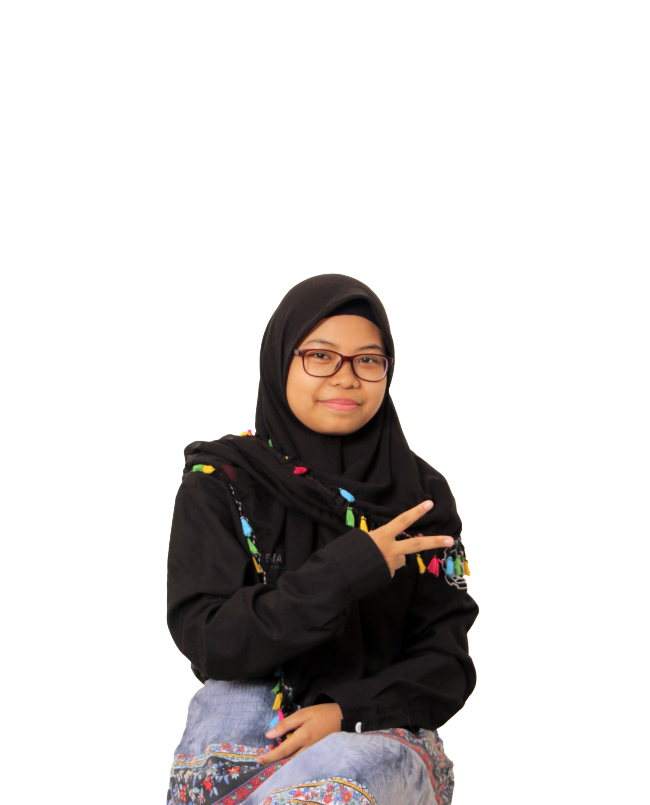

Tentang Kami
Logo Kabinet


Tiga Nilai Dasar
Proaktif
HMTC bisa lebih aktif dalam mengikuti perkembangan yang ada baik di lingkup HMTC, Fakultas maupun KM ITS.
Progresif
HMTC bisa lebih berkembang dari yang sebelumnya serta membawa perubahan yang baik bagi departemen dan juga himpunan.
Prestatif
HMTC bisa membantu meningkatkan capaian prestasi dari departemen Teknik Informatika ITS.
Visi Misi
Visi
Gaungkan Semangat PROAKTIF demi lingkungan HMTC yang PROGRESIF dan PRESTATIF.
Misi
1. Meningkatkan kepedulian internal HMTC.
2. Mendorong anggota HMTC untuk berperan aktif di
lingkup HMTC, FTEIC maupun KM ITS.
3. Menjalin hubungan baik internal maupun eksternal
HMTC.
4. Optimalisasi pengembangan anggota HMTC.
5. Menumbuhkan atmosfer berkompetisi di
lingkungan HMTC.
Non Departemen
Wakahima

Kevin Christian Hadinata
Ketua Himpunan
Muhammmad Daffa’ Aflah Syarif
Wakahima

Clement Prolifel Priyatama
Sekretaris

Khofifah Nurlaela
Bendahara
Btari Aliya Tsabita
Struktur Kabinet

Departemen
HMTC PROGRESIF ITS, memiliki 9 departemen yang beragam dan berlingkup luas. Penasaran? Yuk baca lebih lanjut.
Kaderisasi dan Pemetaan
Departemen yang bertanggung jawab atas pengembangan sumber daya mahasiswa tingkat pertama, membantu dan mengawasi proses adaptasi, serta penanaman nilai-nilai yang dibawa oleh HMTC.
Dalam Negeri
Departemen yang menaungi seluruh anggota HMTC untuk menumbuhkan rasa peduli terhadap sesama sehingga tercipta suasana kekeluargaan dalam HMTC.
Kesejahteraan Mahasiswa
Departemen yang menjaga dan meningkatkan kesejahteraan seluruh anggota HMTC meliputi dalam bidang akademik, kesehatan, maupun finansial.
Minat Bakat
Departemen yang menaungi minat dan bakat termasuk membangun club bagi mahasiswa Informatika ITS.
Keprofesian dan Teknologi
Departemen yang membangun komunitas dan sebagai fasilitator dalam bidang softskill dan hardskill mahasiswa Informatika ITS.
Kewirausahaan
Departemen yang bergerak di bidang kewirausahaan yang bertujuan untuk menumbuhkan jiwa kewirausahaan mahasiswa Informatika ITS.
Sosial Masyarakat
Departemen yang bergerak dalam penyikapan isu sosial meliputi isu kemanusiaan maupun bencana.
Hubungan Luar
Departemen yang menjaga citra positif HMTC dan hubungan baik dengan stakeholder internal maupun eksternal HMTC.
Media dan Informasi
Departemen yang menaungi seluruh media sosial HMTC.
Badan
HMTC PROGRESIF ITS, memiliki 3 badan struktur yang berada di bawah HMTC.
Badan Semi Otonom
PDTC
PDTC atau Persekutuan Doa Teknik Computer-Informatika ITS merupakan wadah untuk mahasiswa Kristen dan Katolik Informatika ITS Untuk bersekutu dan mengalami pertumbuhan rohani dalam Tuhan Yesus.
Badan Semi Otonom
Schematics
Schematics merupakan big event tahunan yang diselenggarakan oleh Mahasiswa Departemen Informatika ITS sejak tahun 2013. Terdiri dari 4 sub event besar (Schematics NLC, Schematics NPC, Schematics NST, Schematics REEVA).
Dewan Perwakilan Angkatan
(DPA)
Lembaga legislatif yang bertugas mengawasi jalannya Kabinet HMTC yang sedang menjabat.